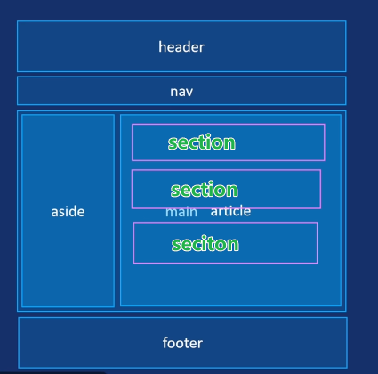

块级元素：默认独占一行，前后自动换行
通常用于：布局，其他元素的容器。
没有语义：只用于布局。
子元素：内部可以嵌套块级元素、行内元素。
行内元素：不独占一行，可以多个 span 放在一行内。
我是span的内容1 我是span的内容2无语义：用于对文本、行内元素进行样式设置和操作。
常用于：布局“排列整齐的无序内容”。排列整齐、跟顺序无关的内容，可以选择使用无序列表。
ul 的直接子元素：只能是列表项 li 标签。
列表项 li 标签的子元素：可以是其他元素，例如：文本、图片、链接等，几乎无限制。
块级元素：ul、li 用于布局，都是块级元素，独占一行的，前后自动换行。
li 标签：列表项，用于表示列表中的一项。
主要用于：顺序很重要的内容，步骤、排名、流程等。
注：有序列表 ol 的直接子元素：只能是列表项 li 标签。这一点和无序列表 ul 相同，直接子元素只能是列表项 li 标签。
注：数字顺序是默认自动添加的编号，不是手动添加。
主要用于：描述标题-对应相关的一个或多个描述详情，都围绕一个主题，这样的名称值对，一般用 dl 标签，常用于网站的底部“分组的相关链接”。
dt 标签：描述的标题（被描述的术语）。
dd 标签：描述的详情（术语的定义）。dd 标签里可以放其他的元素。样式：默认带有左外边距（margin-left）
组合方式：单个dt，单个dd；多个dt，单个dd；单个dt，多个dd。
描述列表：适用于将元数据显示为“键值对列表”的情况。
注： MDN 文档提示：HTML 允许将每个名称-值组（dt、dd）包裹在 dl 元素中的 div 元素内。这在使用微数据、全局属性适用于整个组，或用于样式目的时非常有用。